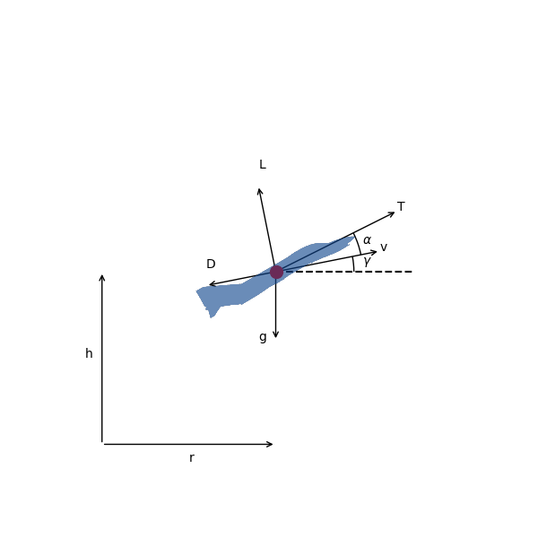

Supersonic Interceptor Minimum Time Climb¶
This example is based on the “A/C Min Time to Climb” example given in chapter 4 of [BrysonDynOpt]. It finds the angle-of-attack history required to accelerate a supersonic interceptor from near ground level, Mach 0.4 to an altitude of 20 km and Mach 1.0.
{kind=link}
The vehicle dynamics are given by
\[\begin{split}\frac{d v}{d t} &= \frac{T}{m} \cos(\alpha) - \frac{D}{m} - g \sin(\gamma) \\
\frac{d \gamma}{d t} &= \frac{T}{mv} \sin(\alpha) + \frac{L}{mv} - \frac{g \cos(\gamma)}{v} \\
\frac{d h}{d t} &= v \sin(\gamma) \\
\frac{d r}{d t} &= v \cos(\gamma) \\
\frac{d m}{d t} &= -\frac{T}{g I_{sp}}\end{split}\]
The initial conditions are
\[\begin{split}r_0 &= 0 \, \mathrm{m} \\
h_0 &= 100 \, \mathrm{m} \\
v_0 &= 135.964 \, \mathrm{m/s} \\
\gamma_0 &= 0 \, \mathrm{deg} \\
m_0 &= 19030.468 \, \mathrm{kg}\end{split}\]
and the final conditions are
\[\begin{split}h_f &= 20000 \, \mathrm{m} \\
M_f &= 1.0 \\
\gamma_0 &= 0 \, \mathrm{deg}\end{split}\]
1. The ODE System: min_time_climb_ode.py¶
import openmdao.api as om
from ...models.atmosphere import USatm1976Comp
from .aero import AeroGroup
from .prop import PropGroup
from ...models.eom import FlightPathEOM2D
class MinTimeClimbODE(om.Group):
def initialize(self):
self.options.declare('num_nodes', types=int)
def setup(self):
nn = self.options['num_nodes']
self.add_subsystem(name='atmos',
subsys=USatm1976Comp(num_nodes=nn),
promotes_inputs=['h'])
self.add_subsystem(name='aero',
subsys=AeroGroup(num_nodes=nn),
promotes_inputs=['v', 'alpha', 'S'])
self.connect('atmos.sos', 'aero.sos')
self.connect('atmos.rho', 'aero.rho')
self.add_subsystem(name='prop',
subsys=PropGroup(num_nodes=nn),
promotes_inputs=['h', 'Isp', 'throttle'])
self.connect('aero.mach', 'prop.mach')
self.add_subsystem(name='flight_dynamics',
subsys=FlightPathEOM2D(num_nodes=nn),
promotes_inputs=['m', 'v', 'gam', 'alpha'])
self.connect('aero.f_drag', 'flight_dynamics.D')
self.connect('aero.f_lift', 'flight_dynamics.L')
self.connect('prop.thrust', 'flight_dynamics.T')
2. Building and running the problem¶
In the following code we follow the following process to solve the problem:
import matplotlib.pyplot as plt
import openmdao.api as om
from openmdao.utils.assert_utils import assert_rel_error
import dymos as dm
from dymos.examples.min_time_climb.min_time_climb_ode import MinTimeClimbODE
from dymos.examples.plotting import plot_results
#
# Instantiate the problem and configure the optimization driver
#
p = om.Problem(model=om.Group())
p.driver = om.pyOptSparseDriver()
p.driver.options['optimizer'] = 'SLSQP'
p.driver.declare_coloring()
#
# Instantiate the trajectory and phase
#
traj = dm.Trajectory()
phase = dm.Phase(ode_class=MinTimeClimbODE,
transcription=dm.GaussLobatto(num_segments=15, compressed=True))
traj.add_phase('phase0', phase)
p.model.add_subsystem('traj', traj)
#
# Set the options on the optimization variables
#
phase.set_time_options(fix_initial=True, duration_bounds=(50, 400),
duration_ref=100.0)
phase.add_state('r', fix_initial=True, lower=0, upper=1.0E6,
ref=1.0E3, defect_ref=1.0E3, units='m',
rate_source='flight_dynamics.r_dot')
phase.add_state('h', fix_initial=True, lower=0, upper=20000.0,
ref=1.0E2, defect_ref=1.0E2, units='m',
rate_source='flight_dynamics.h_dot', targets=['h'])
phase.add_state('v', fix_initial=True, lower=10.0,
ref=1.0E2, defect_ref=1.0E2, units='m/s',
rate_source='flight_dynamics.v_dot', targets=['v'])
phase.add_state('gam', fix_initial=True, lower=-1.5, upper=1.5,
ref=1.0, defect_ref=1.0, units='rad',
rate_source='flight_dynamics.gam_dot', targets=['gam'])
phase.add_state('m', fix_initial=True, lower=10.0, upper=1.0E5,
ref=1.0E3, defect_ref=1.0E3, units='kg',
rate_source='prop.m_dot', targets=['m'])
phase.add_control('alpha', units='deg', lower=-8.0, upper=8.0, scaler=1.0,
rate_continuity=True, rate_continuity_scaler=100.0,
rate2_continuity=False, targets=['alpha'])
phase.add_design_parameter('S', val=49.2386, units='m**2', opt=False, targets=['S'])
phase.add_design_parameter('Isp', val=1600.0, units='s', opt=False, targets=['Isp'])
phase.add_design_parameter('throttle', val=1.0, opt=False, targets=['throttle'])
#
# Setup the boundary and path constraints
#
phase.add_boundary_constraint('h', loc='final', equals=20000, scaler=1.0E-3, units='m')
phase.add_boundary_constraint('aero.mach', loc='final', equals=1.0, shape=(1,))
phase.add_boundary_constraint('gam', loc='final', equals=0.0, units='rad')
phase.add_path_constraint(name='h', lower=100.0, upper=20000, ref=20000)
phase.add_path_constraint(name='aero.mach', lower=0.1, upper=1.8, shape=(1,))
# Minimize time at the end of the phase
phase.add_objective('time', loc='final', ref=1.0)
p.model.linear_solver = om.DirectSolver()
#
# Setup the problem and set the initial guess
#
p.setup(check=True)
p['traj.phase0.t_initial'] = 0.0
p['traj.phase0.t_duration'] = 500
p['traj.phase0.states:r'] = phase.interpolate(ys=[0.0, 50000.0], nodes='state_input')
p['traj.phase0.states:h'] = phase.interpolate(ys=[100.0, 20000.0], nodes='state_input')
p['traj.phase0.states:v'] = phase.interpolate(ys=[135.964, 283.159], nodes='state_input')
p['traj.phase0.states:gam'] = phase.interpolate(ys=[0.0, 0.0], nodes='state_input')
p['traj.phase0.states:m'] = phase.interpolate(ys=[19030.468, 10000.], nodes='state_input')
p['traj.phase0.controls:alpha'] = phase.interpolate(ys=[0.0, 0.0], nodes='control_input')
#
# Solve for the optimal trajectory
#
dm.run_problem(p)
#
# Test the results
#
print(p.get_val('traj.phase0.t_duration'))
#
# Get the explicitly simulated solution and plot the results
#
exp_out = traj.simulate()
plot_results([('traj.phase0.timeseries.time', 'traj.phase0.timeseries.states:h',
'time (s)', 'altitude (m)'),
('traj.phase0.timeseries.time', 'traj.phase0.timeseries.controls:alpha',
'time (s)', 'alpha (deg)')],
title='Supersonic Minimum Time-to-Climb Solution',
p_sol=p, p_sim=exp_out)
plt.show()
--------------------------------------------------------------------------
[[3502,1],0]: A high-performance Open MPI point-to-point messaging module
was unable to find any relevant network interfaces:
Module: OpenFabrics (openib)
Host: travis-job-137fcd62-bca7-4f70-92f5-29292b3975cd
Another transport will be used instead, although this may result in
lower performance.
--------------------------------------------------------------------------
INFO: checking out_of_order
INFO: checking system
INFO: checking solvers
INFO: checking dup_inputs
INFO: checking missing_recorders
WARNING: The Problem has no recorder of any kind attached
INFO: checking comp_has_no_outputs
Full total jacobian was computed 3 times, taking 0.195405 seconds.
Total jacobian shape: (181, 107)
Jacobian shape: (181, 107) (10.96% nonzero)
FWD solves: 18 REV solves: 0
Total colors vs. total size: 18 vs 107 (83.2% improvement)
Sparsity computed using tolerance: 1e-25
Most common number of nonzero entries (2123 of 19367) repeated 1 times out of 1 tolerances tested.
Time to compute sparsity: 0.195405 sec.
Time to compute coloring: 0.011634 sec.
Optimization Problem -- Optimization using pyOpt_sparse
================================================================================
Objective Function: _objfunc
Solution:
--------------------------------------------------------------------------------
Total Time: 3.1606
User Objective Time : 1.0533
User Sensitivity Time : 1.0811
Interface Time : 0.5710
Opt Solver Time: 0.4551
Calls to Objective Function : 79
Calls to Sens Function : 73
Objectives
Index Name Value Optimum
0 traj.phases.phase0.time.time 3.240597E+02 0.000000E+00
Variables (c - continuous, i - integer, d - discrete)
Index Name Type Lower Bound Value Upper Bound Status
0 traj.phases.phase0.time_extents.t_duration_0 c 5.000000E-01 3.240597E+00 4.000000E+00
1 traj.phases.phase0.indep_states.states:r_0 c 0.000000E+00 4.317503E+00 1.000000E+03
2 traj.phases.phase0.indep_states.states:r_1 c 0.000000E+00 1.027139E+01 1.000000E+03
3 traj.phases.phase0.indep_states.states:r_2 c 0.000000E+00 1.580731E+01 1.000000E+03
4 traj.phases.phase0.indep_states.states:r_3 c 0.000000E+00 2.152455E+01 1.000000E+03
5 traj.phases.phase0.indep_states.states:r_4 c 0.000000E+00 2.789586E+01 1.000000E+03
6 traj.phases.phase0.indep_states.states:r_5 c 0.000000E+00 3.554690E+01 1.000000E+03
7 traj.phases.phase0.indep_states.states:r_6 c 0.000000E+00 4.442503E+01 1.000000E+03
8 traj.phases.phase0.indep_states.states:r_7 c 0.000000E+00 5.373262E+01 1.000000E+03
9 traj.phases.phase0.indep_states.states:r_8 c 0.000000E+00 6.338270E+01 1.000000E+03
10 traj.phases.phase0.indep_states.states:r_9 c 0.000000E+00 7.340180E+01 1.000000E+03
11 traj.phases.phase0.indep_states.states:r_10 c 0.000000E+00 8.386381E+01 1.000000E+03
12 traj.phases.phase0.indep_states.states:r_11 c 0.000000E+00 9.487307E+01 1.000000E+03
13 traj.phases.phase0.indep_states.states:r_12 c 0.000000E+00 1.054351E+02 1.000000E+03
14 traj.phases.phase0.indep_states.states:r_13 c 0.000000E+00 1.130950E+02 1.000000E+03
15 traj.phases.phase0.indep_states.states:r_14 c 0.000000E+00 1.194008E+02 1.000000E+03
16 traj.phases.phase0.indep_states.states:h_0 c 0.000000E+00 2.395987E+00 2.000000E+02
17 traj.phases.phase0.indep_states.states:h_1 c 0.000000E+00 2.497639E+01 2.000000E+02
18 traj.phases.phase0.indep_states.states:h_2 c 0.000000E+00 5.950353E+01 2.000000E+02
19 traj.phases.phase0.indep_states.states:h_3 c 0.000000E+00 8.439571E+01 2.000000E+02
20 traj.phases.phase0.indep_states.states:h_4 c 0.000000E+00 8.821669E+01 2.000000E+02
21 traj.phases.phase0.indep_states.states:h_5 c 0.000000E+00 7.331784E+01 2.000000E+02
22 traj.phases.phase0.indep_states.states:h_6 c 0.000000E+00 7.140361E+01 2.000000E+02
23 traj.phases.phase0.indep_states.states:h_7 c 0.000000E+00 7.708345E+01 2.000000E+02
24 traj.phases.phase0.indep_states.states:h_8 c 0.000000E+00 8.259205E+01 2.000000E+02
25 traj.phases.phase0.indep_states.states:h_9 c 0.000000E+00 8.811117E+01 2.000000E+02
26 traj.phases.phase0.indep_states.states:h_10 c 0.000000E+00 9.128877E+01 2.000000E+02
27 traj.phases.phase0.indep_states.states:h_11 c 0.000000E+00 9.364200E+01 2.000000E+02
28 traj.phases.phase0.indep_states.states:h_12 c 0.000000E+00 1.210227E+02 2.000000E+02
29 traj.phases.phase0.indep_states.states:h_13 c 0.000000E+00 1.727799E+02 2.000000E+02
30 traj.phases.phase0.indep_states.states:h_14 c 0.000000E+00 2.000000E+02 2.000000E+02 u
31 traj.phases.phase0.indep_states.states:v_0 c 1.000000E-01 2.631026E+00 1.000000E+19
32 traj.phases.phase0.indep_states.states:v_1 c 1.000000E-01 3.105340E+00 1.000000E+19
33 traj.phases.phase0.indep_states.states:v_2 c 1.000000E-01 2.949836E+00 1.000000E+19
34 traj.phases.phase0.indep_states.states:v_3 c 1.000000E-01 2.843911E+00 1.000000E+19
35 traj.phases.phase0.indep_states.states:v_4 c 1.000000E-01 3.247134E+00 1.000000E+19
36 traj.phases.phase0.indep_states.states:v_5 c 1.000000E-01 3.936202E+00 1.000000E+19
37 traj.phases.phase0.indep_states.states:v_6 c 1.000000E-01 4.239548E+00 1.000000E+19
38 traj.phases.phase0.indep_states.states:v_7 c 1.000000E-01 4.391386E+00 1.000000E+19
39 traj.phases.phase0.indep_states.states:v_8 c 1.000000E-01 4.558612E+00 1.000000E+19
40 traj.phases.phase0.indep_states.states:v_9 c 1.000000E-01 4.734549E+00 1.000000E+19
41 traj.phases.phase0.indep_states.states:v_10 c 1.000000E-01 4.969283E+00 1.000000E+19
42 traj.phases.phase0.indep_states.states:v_11 c 1.000000E-01 5.191767E+00 1.000000E+19
43 traj.phases.phase0.indep_states.states:v_12 c 1.000000E-01 4.819774E+00 1.000000E+19
44 traj.phases.phase0.indep_states.states:v_13 c 1.000000E-01 3.703967E+00 1.000000E+19
45 traj.phases.phase0.indep_states.states:v_14 c 1.000000E-01 2.950864E+00 1.000000E+19
46 traj.phases.phase0.indep_states.states:gam_0 c -1.500000E+00 9.839741E-02 1.500000E+00
47 traj.phases.phase0.indep_states.states:gam_1 c -1.500000E+00 5.982488E-01 1.500000E+00
48 traj.phases.phase0.indep_states.states:gam_2 c -1.500000E+00 4.575948E-01 1.500000E+00
49 traj.phases.phase0.indep_states.states:gam_3 c -1.500000E+00 3.203524E-01 1.500000E+00
50 traj.phases.phase0.indep_states.states:gam_4 c -1.500000E+00 -1.752914E-01 1.500000E+00
51 traj.phases.phase0.indep_states.states:gam_5 c -1.500000E+00 -1.198207E-01 1.500000E+00
52 traj.phases.phase0.indep_states.states:gam_6 c -1.500000E+00 4.661526E-02 1.500000E+00
53 traj.phases.phase0.indep_states.states:gam_7 c -1.500000E+00 6.047816E-02 1.500000E+00
54 traj.phases.phase0.indep_states.states:gam_8 c -1.500000E+00 5.605958E-02 1.500000E+00
55 traj.phases.phase0.indep_states.states:gam_9 c -1.500000E+00 4.931068E-02 1.500000E+00
56 traj.phases.phase0.indep_states.states:gam_10 c -1.500000E+00 1.031882E-02 1.500000E+00
57 traj.phases.phase0.indep_states.states:gam_11 c -1.500000E+00 7.799419E-02 1.500000E+00
58 traj.phases.phase0.indep_states.states:gam_12 c -1.500000E+00 4.654613E-01 1.500000E+00
59 traj.phases.phase0.indep_states.states:gam_13 c -1.500000E+00 6.287067E-01 1.500000E+00
60 traj.phases.phase0.indep_states.states:gam_14 c -1.500000E+00 1.837356E-19 1.500000E+00
61 traj.phases.phase0.indep_states.states:m_0 c 1.000000E-02 1.884020E+01 1.000000E+02
62 traj.phases.phase0.indep_states.states:m_1 c 1.000000E-02 1.863611E+01 1.000000E+02
63 traj.phases.phase0.indep_states.states:m_2 c 1.000000E-02 1.847457E+01 1.000000E+02
64 traj.phases.phase0.indep_states.states:m_3 c 1.000000E-02 1.835554E+01 1.000000E+02
65 traj.phases.phase0.indep_states.states:m_4 c 1.000000E-02 1.825261E+01 1.000000E+02
66 traj.phases.phase0.indep_states.states:m_5 c 1.000000E-02 1.811669E+01 1.000000E+02
67 traj.phases.phase0.indep_states.states:m_6 c 1.000000E-02 1.794600E+01 1.000000E+02
68 traj.phases.phase0.indep_states.states:m_7 c 1.000000E-02 1.777058E+01 1.000000E+02
69 traj.phases.phase0.indep_states.states:m_8 c 1.000000E-02 1.759666E+01 1.000000E+02
70 traj.phases.phase0.indep_states.states:m_9 c 1.000000E-02 1.742388E+01 1.000000E+02
71 traj.phases.phase0.indep_states.states:m_10 c 1.000000E-02 1.725040E+01 1.000000E+02
72 traj.phases.phase0.indep_states.states:m_11 c 1.000000E-02 1.707081E+01 1.000000E+02
73 traj.phases.phase0.indep_states.states:m_12 c 1.000000E-02 1.691150E+01 1.000000E+02
74 traj.phases.phase0.indep_states.states:m_13 c 1.000000E-02 1.683629E+01 1.000000E+02
75 traj.phases.phase0.indep_states.states:m_14 c 1.000000E-02 1.681289E+01 1.000000E+02
76 traj.phases.phase0.control_group.indep_controls.controls:alpha_0 c -8.000000E+00 5.418428E+00 8.000000E+00
77 traj.phases.phase0.control_group.indep_controls.controls:alpha_1 c -8.000000E+00 2.640665E+00 8.000000E+00
78 traj.phases.phase0.control_group.indep_controls.controls:alpha_2 c -8.000000E+00 2.026926E+00 8.000000E+00
79 traj.phases.phase0.control_group.indep_controls.controls:alpha_3 c -8.000000E+00 2.091047E+00 8.000000E+00
80 traj.phases.phase0.control_group.indep_controls.controls:alpha_4 c -8.000000E+00 1.346868E+00 8.000000E+00
81 traj.phases.phase0.control_group.indep_controls.controls:alpha_5 c -8.000000E+00 7.740241E-01 8.000000E+00
82 traj.phases.phase0.control_group.indep_controls.controls:alpha_6 c -8.000000E+00 1.352152E+00 8.000000E+00
83 traj.phases.phase0.control_group.indep_controls.controls:alpha_7 c -8.000000E+00 1.881572E+00 8.000000E+00
84 traj.phases.phase0.control_group.indep_controls.controls:alpha_8 c -8.000000E+00 1.162604E+00 8.000000E+00
85 traj.phases.phase0.control_group.indep_controls.controls:alpha_9 c -8.000000E+00 4.793200E-01 8.000000E+00
86 traj.phases.phase0.control_group.indep_controls.controls:alpha_10 c -8.000000E+00 1.115790E+00 8.000000E+00
87 traj.phases.phase0.control_group.indep_controls.controls:alpha_11 c -8.000000E+00 1.992812E+00 8.000000E+00
88 traj.phases.phase0.control_group.indep_controls.controls:alpha_12 c -8.000000E+00 2.031184E+00 8.000000E+00
89 traj.phases.phase0.control_group.indep_controls.controls:alpha_13 c -8.000000E+00 1.686188E+00 8.000000E+00
90 traj.phases.phase0.control_group.indep_controls.controls:alpha_14 c -8.000000E+00 1.413107E+00 8.000000E+00
91 traj.phases.phase0.control_group.indep_controls.controls:alpha_15 c -8.000000E+00 1.244046E+00 8.000000E+00
92 traj.phases.phase0.control_group.indep_controls.controls:alpha_16 c -8.000000E+00 1.211114E+00 8.000000E+00
93 traj.phases.phase0.control_group.indep_controls.controls:alpha_17 c -8.000000E+00 1.242378E+00 8.000000E+00
94 traj.phases.phase0.control_group.indep_controls.controls:alpha_18 c -8.000000E+00 1.265906E+00 8.000000E+00
95 traj.phases.phase0.control_group.indep_controls.controls:alpha_19 c -8.000000E+00 1.260665E+00 8.000000E+00
96 traj.phases.phase0.control_group.indep_controls.controls:alpha_20 c -8.000000E+00 1.205620E+00 8.000000E+00
97 traj.phases.phase0.control_group.indep_controls.controls:alpha_21 c -8.000000E+00 1.152143E+00 8.000000E+00
98 traj.phases.phase0.control_group.indep_controls.controls:alpha_22 c -8.000000E+00 1.151603E+00 8.000000E+00
99 traj.phases.phase0.control_group.indep_controls.controls:alpha_23 c -8.000000E+00 1.362491E+00 8.000000E+00
100 traj.phases.phase0.control_group.indep_controls.controls:alpha_24 c -8.000000E+00 1.943299E+00 8.000000E+00
101 traj.phases.phase0.control_group.indep_controls.controls:alpha_25 c -8.000000E+00 2.750998E+00 8.000000E+00
102 traj.phases.phase0.control_group.indep_controls.controls:alpha_26 c -8.000000E+00 3.642562E+00 8.000000E+00
103 traj.phases.phase0.control_group.indep_controls.controls:alpha_27 c -8.000000E+00 3.961427E+00 8.000000E+00
104 traj.phases.phase0.control_group.indep_controls.controls:alpha_28 c -8.000000E+00 3.051032E+00 8.000000E+00
105 traj.phases.phase0.control_group.indep_controls.controls:alpha_29 c -8.000000E+00 -1.396123E-01 8.000000E+00
106 traj.phases.phase0.control_group.indep_controls.controls:alpha_30 c -8.000000E+00 -6.661495E+00 8.000000E+00
Constraints (i - inequality, e - equality)
Index Name Type Lower Value Upper Status Pi
0 traj.phases.phase0.collocation_constraint.defects:r e 0.000000E+00 1.848211E-09 0.000000E+00 2.21333E-03
1 traj.phases.phase0.collocation_constraint.defects:r e 0.000000E+00 2.109423E-09 0.000000E+00 2.25786E-03
2 traj.phases.phase0.collocation_constraint.defects:r e 0.000000E+00 4.754537E-09 0.000000E+00 1.62284E-03
3 traj.phases.phase0.collocation_constraint.defects:r e 0.000000E+00 -1.043142E-09 0.000000E+00 1.31061E-03
4 traj.phases.phase0.collocation_constraint.defects:r e 0.000000E+00 4.064570E-09 0.000000E+00 9.16891E-04
5 traj.phases.phase0.collocation_constraint.defects:r e 0.000000E+00 1.612050E-08 0.000000E+00 6.71737E-04
6 traj.phases.phase0.collocation_constraint.defects:r e 0.000000E+00 3.701152E-09 0.000000E+00 4.08647E-04
7 traj.phases.phase0.collocation_constraint.defects:r e 0.000000E+00 2.034718E-09 0.000000E+00 1.83569E-04
8 traj.phases.phase0.collocation_constraint.defects:r e 0.000000E+00 1.630111E-09 0.000000E+00 6.03525E-01
9 traj.phases.phase0.collocation_constraint.defects:r e 0.000000E+00 3.926544E-09 0.000000E+00 1.26703E+00
10 traj.phases.phase0.collocation_constraint.defects:r e 0.000000E+00 5.016658E-10 0.000000E+00 2.10051E+00
11 traj.phases.phase0.collocation_constraint.defects:r e 0.000000E+00 1.760230E-09 0.000000E+00 2.13422E+00
12 traj.phases.phase0.collocation_constraint.defects:r e 0.000000E+00 7.281953E-09 0.000000E+00 1.97319E+00
13 traj.phases.phase0.collocation_constraint.defects:r e 0.000000E+00 1.967321E-09 0.000000E+00 1.76882E+00
14 traj.phases.phase0.collocation_constraint.defects:r e 0.000000E+00 1.244107E-09 0.000000E+00 2.13066E+00
15 traj.phases.phase0.collocation_constraint.defects:h e 0.000000E+00 9.435770E-09 0.000000E+00 1.73670E+01
16 traj.phases.phase0.collocation_constraint.defects:h e 0.000000E+00 4.283917E-08 0.000000E+00 2.94381E+01
17 traj.phases.phase0.collocation_constraint.defects:h e 0.000000E+00 1.954182E-08 0.000000E+00 5.43670E+01
18 traj.phases.phase0.collocation_constraint.defects:h e 0.000000E+00 4.095102E-08 0.000000E+00 9.05581E+01
19 traj.phases.phase0.collocation_constraint.defects:h e 0.000000E+00 -2.007281E-08 0.000000E+00 9.40268E+01
20 traj.phases.phase0.collocation_constraint.defects:h e 0.000000E+00 5.436599E-08 0.000000E+00 9.44051E+01
21 traj.phases.phase0.collocation_constraint.defects:h e 0.000000E+00 -5.837968E-08 0.000000E+00 1.01006E+02
22 traj.phases.phase0.collocation_constraint.defects:h e 0.000000E+00 -3.718327E-09 0.000000E+00 5.39593E+01
23 traj.phases.phase0.collocation_constraint.defects:h e 0.000000E+00 5.489146E-09 0.000000E+00 2.95402E+00
24 traj.phases.phase0.collocation_constraint.defects:h e 0.000000E+00 5.137103E-09 0.000000E+00 5.13293E+00
25 traj.phases.phase0.collocation_constraint.defects:h e 0.000000E+00 1.138471E-08 0.000000E+00 1.68316E+01
26 traj.phases.phase0.collocation_constraint.defects:h e 0.000000E+00 3.723814E-09 0.000000E+00 1.55216E+01
27 traj.phases.phase0.collocation_constraint.defects:h e 0.000000E+00 4.421703E-08 0.000000E+00 1.68739E+01
28 traj.phases.phase0.collocation_constraint.defects:h e 0.000000E+00 -5.284510E-09 0.000000E+00 2.24674E+01
29 traj.phases.phase0.collocation_constraint.defects:h e 0.000000E+00 -6.086067E-09 0.000000E+00 4.10293E+01
30 traj.phases.phase0.collocation_constraint.defects:v e 0.000000E+00 5.720568E-10 0.000000E+00 2.59201E+01
31 traj.phases.phase0.collocation_constraint.defects:v e 0.000000E+00 1.134249E-08 0.000000E+00 2.32559E+01
32 traj.phases.phase0.collocation_constraint.defects:v e 0.000000E+00 1.009208E-09 0.000000E+00 2.00279E+01
33 traj.phases.phase0.collocation_constraint.defects:v e 0.000000E+00 3.381698E-09 0.000000E+00 1.63049E+01
34 traj.phases.phase0.collocation_constraint.defects:v e 0.000000E+00 5.307810E-09 0.000000E+00 1.24394E+01
35 traj.phases.phase0.collocation_constraint.defects:v e 0.000000E+00 1.808055E-09 0.000000E+00 8.45415E+00
36 traj.phases.phase0.collocation_constraint.defects:v e 0.000000E+00 5.711873E-09 0.000000E+00 3.75963E+00
37 traj.phases.phase0.collocation_constraint.defects:v e 0.000000E+00 1.489900E-09 0.000000E+00 1.54233E-01
38 traj.phases.phase0.collocation_constraint.defects:v e 0.000000E+00 1.377972E-09 0.000000E+00 5.93940E-05
39 traj.phases.phase0.collocation_constraint.defects:v e 0.000000E+00 4.949547E-10 0.000000E+00 2.00056E-05
40 traj.phases.phase0.collocation_constraint.defects:v e 0.000000E+00 1.058720E-09 0.000000E+00 3.30135E-05
41 traj.phases.phase0.collocation_constraint.defects:v e 0.000000E+00 2.112061E-09 0.000000E+00 2.73706E-06
42 traj.phases.phase0.collocation_constraint.defects:v e 0.000000E+00 6.034767E-11 0.000000E+00 6.86501E-06
43 traj.phases.phase0.collocation_constraint.defects:v e 0.000000E+00 9.956064E-10 0.000000E+00 1.50317E-05
44 traj.phases.phase0.collocation_constraint.defects:v e 0.000000E+00 8.551482E-10 0.000000E+00 4.33553E-06
45 traj.phases.phase0.collocation_constraint.defects:gam e 0.000000E+00 1.754651E-10 0.000000E+00 5.71196E+12
46 traj.phases.phase0.collocation_constraint.defects:gam e 0.000000E+00 -9.976498E-09 0.000000E+00 0.00000E+00
47 traj.phases.phase0.collocation_constraint.defects:gam e 0.000000E+00 -1.260056E-09 0.000000E+00 1.68055E+02
48 traj.phases.phase0.collocation_constraint.defects:gam e 0.000000E+00 -3.618005E-10 0.000000E+00 5.34456E-16
49 traj.phases.phase0.collocation_constraint.defects:gam e 0.000000E+00 -5.053014E-09 0.000000E+00 0.00000E+00
50 traj.phases.phase0.collocation_constraint.defects:gam e 0.000000E+00 -1.400510E-09 0.000000E+00 0.00000E+00
51 traj.phases.phase0.collocation_constraint.defects:gam e 0.000000E+00 -2.189225E-09 0.000000E+00 0.00000E+00
52 traj.phases.phase0.collocation_constraint.defects:gam e 0.000000E+00 2.174791E-09 0.000000E+00 0.00000E+00
53 traj.phases.phase0.collocation_constraint.defects:gam e 0.000000E+00 -1.342841E-09 0.000000E+00 0.00000E+00
54 traj.phases.phase0.collocation_constraint.defects:gam e 0.000000E+00 -4.040966E-10 0.000000E+00 0.00000E+00
55 traj.phases.phase0.collocation_constraint.defects:gam e 0.000000E+00 4.294127E-10 0.000000E+00 0.00000E+00
56 traj.phases.phase0.collocation_constraint.defects:gam e 0.000000E+00 -1.298522E-09 0.000000E+00 0.00000E+00
57 traj.phases.phase0.collocation_constraint.defects:gam e 0.000000E+00 -6.861978E-10 0.000000E+00 0.00000E+00
58 traj.phases.phase0.collocation_constraint.defects:gam e 0.000000E+00 -1.081395E-09 0.000000E+00 0.00000E+00
59 traj.phases.phase0.collocation_constraint.defects:gam e 0.000000E+00 -7.715878E-11 0.000000E+00 0.00000E+00
60 traj.phases.phase0.collocation_constraint.defects:m e 0.000000E+00 -1.350503E-11 0.000000E+00 0.00000E+00
61 traj.phases.phase0.collocation_constraint.defects:m e 0.000000E+00 -7.239084E-11 0.000000E+00 0.00000E+00
62 traj.phases.phase0.collocation_constraint.defects:m e 0.000000E+00 -6.101815E-12 0.000000E+00 0.00000E+00
63 traj.phases.phase0.collocation_constraint.defects:m e 0.000000E+00 4.692703E-11 0.000000E+00 0.00000E+00
64 traj.phases.phase0.collocation_constraint.defects:m e 0.000000E+00 5.317369E-11 0.000000E+00 0.00000E+00
65 traj.phases.phase0.collocation_constraint.defects:m e 0.000000E+00 5.104203E-11 0.000000E+00 0.00000E+00
66 traj.phases.phase0.collocation_constraint.defects:m e 0.000000E+00 -2.907682E-12 0.000000E+00 0.00000E+00
67 traj.phases.phase0.collocation_constraint.defects:m e 0.000000E+00 -2.360059E-11 0.000000E+00 0.00000E+00
68 traj.phases.phase0.collocation_constraint.defects:m e 0.000000E+00 -7.720867E-12 0.000000E+00 0.00000E+00
69 traj.phases.phase0.collocation_constraint.defects:m e 0.000000E+00 -4.131083E-12 0.000000E+00 0.00000E+00
70 traj.phases.phase0.collocation_constraint.defects:m e 0.000000E+00 -1.988714E-11 0.000000E+00 0.00000E+00
71 traj.phases.phase0.collocation_constraint.defects:m e 0.000000E+00 -4.372134E-11 0.000000E+00 0.00000E+00
72 traj.phases.phase0.collocation_constraint.defects:m e 0.000000E+00 3.751310E-12 0.000000E+00 0.00000E+00
73 traj.phases.phase0.collocation_constraint.defects:m e 0.000000E+00 7.041346E-11 0.000000E+00 0.00000E+00
74 traj.phases.phase0.collocation_constraint.defects:m e 0.000000E+00 7.528299E-12 0.000000E+00 0.00000E+00
75 traj.phases.phase0.continuity_comp.defect_control_rates:alpha_rate e 0.000000E+00 2.698339E-12 0.000000E+00 0.00000E+00
76 traj.phases.phase0.continuity_comp.defect_control_rates:alpha_rate e 0.000000E+00 -6.745847E-13 0.000000E+00 0.00000E+00
77 traj.phases.phase0.continuity_comp.defect_control_rates:alpha_rate e 0.000000E+00 6.745847E-13 0.000000E+00 0.00000E+00
78 traj.phases.phase0.continuity_comp.defect_control_rates:alpha_rate e 0.000000E+00 1.349169E-12 0.000000E+00 0.00000E+00
79 traj.phases.phase0.continuity_comp.defect_control_rates:alpha_rate e 0.000000E+00 -8.994463E-13 0.000000E+00 0.00000E+00
80 traj.phases.phase0.continuity_comp.defect_control_rates:alpha_rate e 0.000000E+00 8.994463E-13 0.000000E+00 0.00000E+00
81 traj.phases.phase0.continuity_comp.defect_control_rates:alpha_rate e 0.000000E+00 -6.745847E-13 0.000000E+00 0.00000E+00
82 traj.phases.phase0.continuity_comp.defect_control_rates:alpha_rate e 0.000000E+00 0.000000E+00 0.000000E+00 0.00000E+00
83 traj.phases.phase0.continuity_comp.defect_control_rates:alpha_rate e 0.000000E+00 0.000000E+00 0.000000E+00 0.00000E+00
84 traj.phases.phase0.continuity_comp.defect_control_rates:alpha_rate e 0.000000E+00 6.745847E-13 0.000000E+00 0.00000E+00
85 traj.phases.phase0.continuity_comp.defect_control_rates:alpha_rate e 0.000000E+00 5.972886E-13 0.000000E+00 0.00000E+00
86 traj.phases.phase0.continuity_comp.defect_control_rates:alpha_rate e 0.000000E+00 -6.745847E-13 0.000000E+00 0.00000E+00
87 traj.phases.phase0.continuity_comp.defect_control_rates:alpha_rate e 0.000000E+00 -1.124308E-12 0.000000E+00 0.00000E+00
88 traj.phases.phase0.continuity_comp.defect_control_rates:alpha_rate e 0.000000E+00 2.698339E-12 0.000000E+00 0.00000E+00
89 traj.phases.phase0.final_boundary_constraints.final_value:h e 2.000000E+01 2.000000E+01 2.000000E+01 0.00000E+00
90 traj.phases.phase0.final_boundary_constraints.final_value:mach e 1.000000E+00 1.000000E+00 1.000000E+00 3.83118E+13
91 traj.phases.phase0.final_boundary_constraints.final_value:gam e 0.000000E+00 1.837356E-19 0.000000E+00 0.00000E+00
92 traj.phases.phase0.path_constraints.path:h i 5.000000E-03 5.000000E-03 1.000000E+00 l 0.00000E+00
93 traj.phases.phase0.path_constraints.path:h i 5.000000E-03 5.000000E-03 1.000000E+00 l 0.00000E+00
94 traj.phases.phase0.path_constraints.path:h i 5.000000E-03 1.197994E-02 1.000000E+00 0.00000E+00
95 traj.phases.phase0.path_constraints.path:h i 5.000000E-03 1.197994E-02 1.000000E+00 1.80222E-18
96 traj.phases.phase0.path_constraints.path:h i 5.000000E-03 4.830618E-02 1.000000E+00 0.00000E+00
97 traj.phases.phase0.path_constraints.path:h i 5.000000E-03 1.248819E-01 1.000000E+00 0.00000E+00
98 traj.phases.phase0.path_constraints.path:h i 5.000000E-03 1.248819E-01 1.000000E+00 0.00000E+00
99 traj.phases.phase0.path_constraints.path:h i 5.000000E-03 2.172179E-01 1.000000E+00 1.32656E-18
100 traj.phases.phase0.path_constraints.path:h i 5.000000E-03 2.975177E-01 1.000000E+00 0.00000E+00
101 traj.phases.phase0.path_constraints.path:h i 5.000000E-03 2.975177E-01 1.000000E+00 0.00000E+00
102 traj.phases.phase0.path_constraints.path:h i 5.000000E-03 3.652526E-01 1.000000E+00 0.00000E+00
103 traj.phases.phase0.path_constraints.path:h i 5.000000E-03 4.219785E-01 1.000000E+00 0.00000E+00
104 traj.phases.phase0.path_constraints.path:h i 5.000000E-03 4.219785E-01 1.000000E+00 0.00000E+00
105 traj.phases.phase0.path_constraints.path:h i 5.000000E-03 4.512694E-01 1.000000E+00 0.00000E+00
106 traj.phases.phase0.path_constraints.path:h i 5.000000E-03 4.410835E-01 1.000000E+00 0.00000E+00
107 traj.phases.phase0.path_constraints.path:h i 5.000000E-03 4.410835E-01 1.000000E+00 0.00000E+00
108 traj.phases.phase0.path_constraints.path:h i 5.000000E-03 4.025431E-01 1.000000E+00 0.00000E+00
109 traj.phases.phase0.path_constraints.path:h i 5.000000E-03 3.665892E-01 1.000000E+00 0.00000E+00
110 traj.phases.phase0.path_constraints.path:h i 5.000000E-03 3.665892E-01 1.000000E+00 0.00000E+00
111 traj.phases.phase0.path_constraints.path:h i 5.000000E-03 3.527831E-01 1.000000E+00 0.00000E+00
112 traj.phases.phase0.path_constraints.path:h i 5.000000E-03 3.570181E-01 1.000000E+00 0.00000E+00
113 traj.phases.phase0.path_constraints.path:h i 5.000000E-03 3.570181E-01 1.000000E+00 0.00000E+00
114 traj.phases.phase0.path_constraints.path:h i 5.000000E-03 3.703013E-01 1.000000E+00 0.00000E+00
115 traj.phases.phase0.path_constraints.path:h i 5.000000E-03 3.854173E-01 1.000000E+00 0.00000E+00
116 traj.phases.phase0.path_constraints.path:h i 5.000000E-03 3.854173E-01 1.000000E+00 0.00000E+00
117 traj.phases.phase0.path_constraints.path:h i 5.000000E-03 3.993238E-01 1.000000E+00 0.00000E+00
118 traj.phases.phase0.path_constraints.path:h i 5.000000E-03 4.129603E-01 1.000000E+00 3.51084E-19
119 traj.phases.phase0.path_constraints.path:h i 5.000000E-03 4.129603E-01 1.000000E+00 0.00000E+00
120 traj.phases.phase0.path_constraints.path:h i 5.000000E-03 4.270558E-01 1.000000E+00 0.00000E+00
121 traj.phases.phase0.path_constraints.path:h i 5.000000E-03 4.405558E-01 1.000000E+00 0.00000E+00
122 traj.phases.phase0.path_constraints.path:h i 5.000000E-03 4.405558E-01 1.000000E+00 0.00000E+00
123 traj.phases.phase0.path_constraints.path:h i 5.000000E-03 4.509585E-01 1.000000E+00 0.00000E+00
124 traj.phases.phase0.path_constraints.path:h i 5.000000E-03 4.564438E-01 1.000000E+00 0.00000E+00
125 traj.phases.phase0.path_constraints.path:h i 5.000000E-03 4.564438E-01 1.000000E+00 0.00000E+00
126 traj.phases.phase0.path_constraints.path:h i 5.000000E-03 4.575573E-01 1.000000E+00 2.02263E-18
127 traj.phases.phase0.path_constraints.path:h i 5.000000E-03 4.682100E-01 1.000000E+00 0.00000E+00
128 traj.phases.phase0.path_constraints.path:h i 5.000000E-03 4.682100E-01 1.000000E+00 0.00000E+00
129 traj.phases.phase0.path_constraints.path:h i 5.000000E-03 5.129140E-01 1.000000E+00 0.00000E+00
130 traj.phases.phase0.path_constraints.path:h i 5.000000E-03 6.051135E-01 1.000000E+00 0.00000E+00
131 traj.phases.phase0.path_constraints.path:h i 5.000000E-03 6.051135E-01 1.000000E+00 0.00000E+00
132 traj.phases.phase0.path_constraints.path:h i 5.000000E-03 7.343037E-01 1.000000E+00 0.00000E+00
133 traj.phases.phase0.path_constraints.path:h i 5.000000E-03 8.638993E-01 1.000000E+00 0.00000E+00
134 traj.phases.phase0.path_constraints.path:h i 5.000000E-03 8.638993E-01 1.000000E+00 0.00000E+00
135 traj.phases.phase0.path_constraints.path:h i 5.000000E-03 9.613621E-01 1.000000E+00 0.00000E+00
136 traj.phases.phase0.path_constraints.path:h i 5.000000E-03 1.000000E+00 1.000000E+00 u 5.14135E+01
137 traj.phases.phase0.path_constraints.path:mach i 1.000000E-01 4.000084E-01 1.800000E+00 9.97663E-04
138 traj.phases.phase0.path_constraints.path:mach i 1.000000E-01 5.894300E-01 1.800000E+00 4.17875E-03
139 traj.phases.phase0.path_constraints.path:mach i 1.000000E-01 7.752767E-01 1.800000E+00 4.28392E-03
140 traj.phases.phase0.path_constraints.path:mach i 1.000000E-01 7.752767E-01 1.800000E+00 -1.02230E-04
141 traj.phases.phase0.path_constraints.path:mach i 1.000000E-01 9.007038E-01 1.800000E+00 4.72018E-03
142 traj.phases.phase0.path_constraints.path:mach i 1.000000E-01 9.394125E-01 1.800000E+00 9.08258E-03
143 traj.phases.phase0.path_constraints.path:mach i 1.000000E-01 9.394125E-01 1.800000E+00 -2.57560E-03
144 traj.phases.phase0.path_constraints.path:mach i 1.000000E-01 9.347090E-01 1.800000E+00 -1.00252E-02
145 traj.phases.phase0.path_constraints.path:mach i 1.000000E-01 9.316449E-01 1.800000E+00 -8.81860E-03
146 traj.phases.phase0.path_constraints.path:mach i 1.000000E-01 9.316449E-01 1.800000E+00 -1.44065E-02
147 traj.phases.phase0.path_constraints.path:mach i 1.000000E-01 9.276615E-01 1.800000E+00 -4.05146E-03
148 traj.phases.phase0.path_constraints.path:mach i 1.000000E-01 9.288150E-01 1.800000E+00 -2.13303E-03
149 traj.phases.phase0.path_constraints.path:mach i 1.000000E-01 9.288150E-01 1.800000E+00 1.28497E-02
150 traj.phases.phase0.path_constraints.path:mach i 1.000000E-01 9.731452E-01 1.800000E+00 -9.09409E-04
151 traj.phases.phase0.path_constraints.path:mach i 1.000000E-01 1.066198E+00 1.800000E+00 -1.48247E-04
152 traj.phases.phase0.path_constraints.path:mach i 1.000000E-01 1.066198E+00 1.800000E+00 -3.51599E-01
153 traj.phases.phase0.path_constraints.path:mach i 1.000000E-01 1.175901E+00 1.800000E+00 -8.36815E-02
154 traj.phases.phase0.path_constraints.path:mach i 1.000000E-01 1.266164E+00 1.800000E+00 -5.87928E-01
155 traj.phases.phase0.path_constraints.path:mach i 1.000000E-01 1.266164E+00 1.800000E+00 6.68033E-02
156 traj.phases.phase0.path_constraints.path:mach i 1.000000E-01 1.323255E+00 1.800000E+00 1.23881E-01
157 traj.phases.phase0.path_constraints.path:mach i 1.000000E-01 1.360228E+00 1.800000E+00 2.35819E-02
158 traj.phases.phase0.path_constraints.path:mach i 1.000000E-01 1.360228E+00 1.800000E+00 3.80885E-02
159 traj.phases.phase0.path_constraints.path:mach i 1.000000E-01 1.390000E+00 1.800000E+00 3.14949E-02
160 traj.phases.phase0.path_constraints.path:mach i 1.000000E-01 1.419827E+00 1.800000E+00 -3.64432E-01
161 traj.phases.phase0.path_constraints.path:mach i 1.000000E-01 1.419827E+00 1.800000E+00 -4.64724E-01
162 traj.phases.phase0.path_constraints.path:mach i 1.000000E-01 1.451940E+00 1.800000E+00 -3.25826E-01
163 traj.phases.phase0.path_constraints.path:mach i 1.000000E-01 1.485106E+00 1.800000E+00 -4.51365E-01
164 traj.phases.phase0.path_constraints.path:mach i 1.000000E-01 1.485106E+00 1.800000E+00 -6.96175E-01
165 traj.phases.phase0.path_constraints.path:mach i 1.000000E-01 1.518775E+00 1.800000E+00 -9.59359E-01
166 traj.phases.phase0.path_constraints.path:mach i 1.000000E-01 1.554361E+00 1.800000E+00 -1.04426E-01
167 traj.phases.phase0.path_constraints.path:mach i 1.000000E-01 1.554361E+00 1.800000E+00 5.21563E-03
168 traj.phases.phase0.path_constraints.path:mach i 1.000000E-01 1.594248E+00 1.800000E+00 -9.23509E-03
169 traj.phases.phase0.path_constraints.path:mach i 1.000000E-01 1.638771E+00 1.800000E+00 -1.07760E-02
170 traj.phases.phase0.path_constraints.path:mach i 1.000000E-01 1.638771E+00 1.800000E+00 -3.21057E-03
171 traj.phases.phase0.path_constraints.path:mach i 1.000000E-01 1.685016E+00 1.800000E+00 -6.69561E-03
172 traj.phases.phase0.path_constraints.path:mach i 1.000000E-01 1.717893E+00 1.800000E+00 -2.27355E-03
173 traj.phases.phase0.path_constraints.path:mach i 1.000000E-01 1.717893E+00 1.800000E+00 -1.07811E-02
174 traj.phases.phase0.path_constraints.path:mach i 1.000000E-01 1.716185E+00 1.800000E+00 4.42887E-03
175 traj.phases.phase0.path_constraints.path:mach i 1.000000E-01 1.633471E+00 1.800000E+00 2.50818E-02
176 traj.phases.phase0.path_constraints.path:mach i 1.000000E-01 1.633471E+00 1.800000E+00 1.69016E-02
177 traj.phases.phase0.path_constraints.path:mach i 1.000000E-01 1.457325E+00 1.800000E+00 -1.74382E-02
178 traj.phases.phase0.path_constraints.path:mach i 1.000000E-01 1.255313E+00 1.800000E+00 8.92557E-03
179 traj.phases.phase0.path_constraints.path:mach i 1.000000E-01 1.255313E+00 1.800000E+00 -2.23826E-02
180 traj.phases.phase0.path_constraints.path:mach i 1.000000E-01 1.080862E+00 1.800000E+00 8.76247E-03
181 traj.phases.phase0.path_constraints.path:mach i 1.000000E-01 1.000000E+00 1.800000E+00 1.19551E-02
--------------------------------------------------------------------------------
[324.0596935]
Simulating trajectory traj
INFO: checking out_of_order
INFO: checking system
INFO: checking solvers
INFO: checking dup_inputs
INFO: checking missing_recorders
WARNING: The Problem has no recorder of any kind attached
INFO: checking comp_has_no_outputs
/home/travis/miniconda/envs/PY3.6/lib/python3.6/importlib/_bootstrap.py:219: RuntimeWarning: numpy.ufunc size changed, may indicate binary incompatibility. Expected 192 from C header, got 216 from PyObject
return f(*args, **kwds)
/home/travis/miniconda/envs/PY3.6/lib/python3.6/site-packages/petsc4py/lib/__init__.py:47: DeprecationWarning: the imp module is deprecated in favour of importlib; see the module's documentation for alternative uses
import sys, os, imp, warnings
/home/travis/miniconda/envs/PY3.6/lib/python3.6/importlib/_bootstrap.py:219: RuntimeWarning: numpy.ufunc size changed, may indicate binary incompatibility. Expected 192 from C header, got 216 from PyObject
return f(*args, **kwds)
/home/travis/miniconda/envs/PY3.6/lib/python3.6/site-packages/numpy/lib/type_check.py:546: DeprecationWarning: np.asscalar(a) is deprecated since NumPy v1.16, use a.item() instead
'a.item() instead', DeprecationWarning, stacklevel=1)
Done simulating trajectory traj
References¶
- BrysonDynOpt
Bryson, Arthur Earl. Dynamic optimization. Vol. 1. Prentice Hall, p.172, 1999.